专题1.1 生活中的立体图形
专题1.1 生活中的立体图形

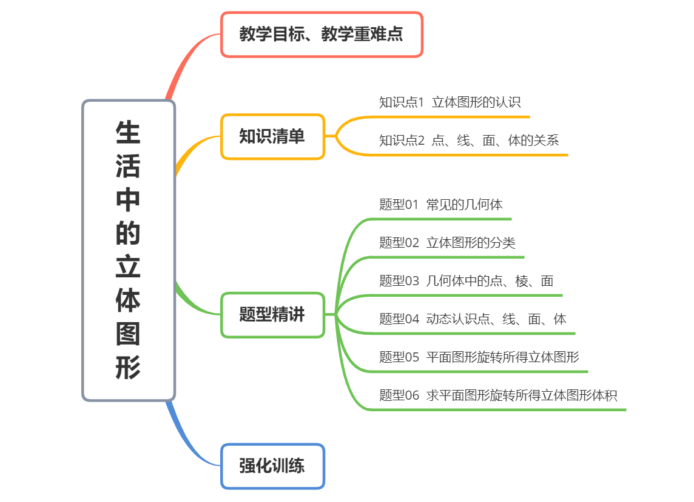

教学目标 | 1.认识圆柱、圆锥、正方体、棱柱、球. 2.会用数学的语言描述圆柱、圆锥、正方体、棱柱、球的某些特征并能对它们进行简单的分类. 3.进一步认识点、线、面、体，感受点、线、面、体之间的关系. 4.经历从现实世界中抽象出图形的过程，会从构成图形的基本元素的角度认识常见几何体的特征. |
教学重难点 | 1.重点 （1）能从简单实物的外形中抽象出几何图形，并了解立体图形与平面图形的区别. （2）认识“点动成线，线动成面，面动成体”的事实。 2.难点 （1）会判断一个图形是立体图形还是平面图形，能准确识别简单几何体. （2）认识“面与面相交得到线、线与线相交得到点”的事实. |

知识点01 立体图形的认识
1.有些几何图形（如长方体、正方体、圆柱、圆锥、棱柱、棱锥、球等）的各部分不都在同一个平面内，这就是立体图形．
2.立体图形分类：除了按照 分类，也可以按照围成几何体的面是否有曲面划分：①有 ：圆柱、圆锥、球等；② ：棱柱、棱锥等.
3.棱柱的有关概念及其特征:
①在棱柱中，相邻两个面的交线叫做 ，相邻两个侧面的交线叫做 ，棱柱所有侧棱长都 ，棱柱的上下底面的 ，并且都是多边形；棱柱的侧面形状都是平行四边形.
②棱柱的顶点数、棱数和面数之间的关系：底面多边形的边数n确定该棱柱是n棱柱，它有 个顶点，
条棱， 条侧棱，有 个面， 个侧面.
【即学即练】
1．下列各个花瓶可以近似看成圆柱的是（ ）
A． B．
B．
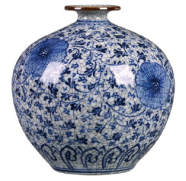
C． D．
2．将下图中的立体图形分类．
柱体 ；锥体 ；球体 ．
3．综合与实践
新年晚会是我们最欢乐的时候，会场上，悬挂着五彩缤纷的小装饰，其中有各种各样的立体图形．下面是常见的一些多面体：

操作探究：
（1）通过数上面图形中每个多面体的顶点数
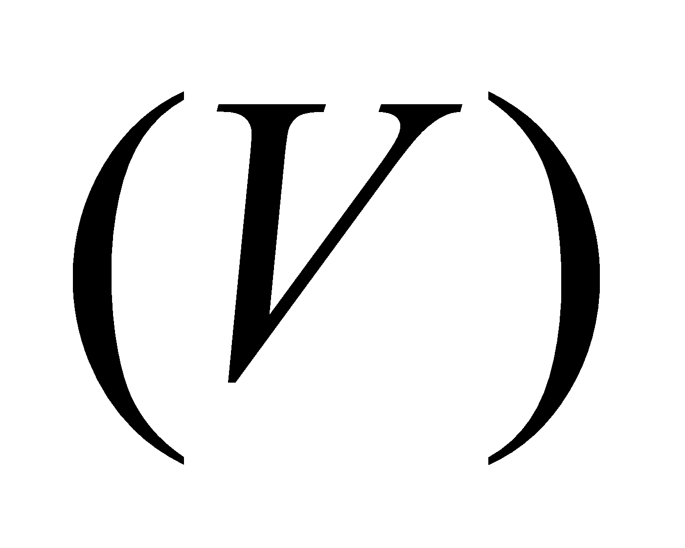
、面数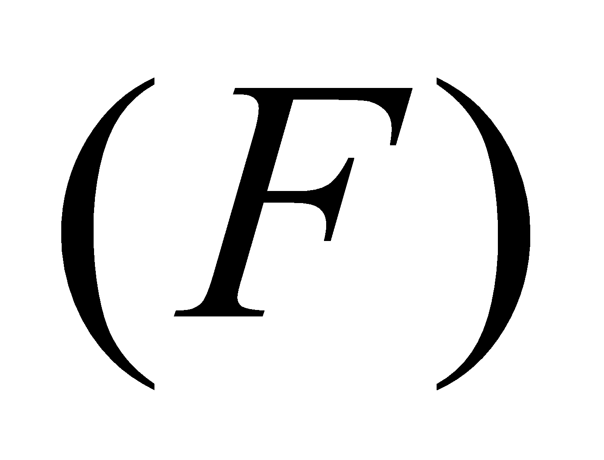
和棱数 ，填写下表中空缺的部分：
，填写下表中空缺的部分：多面体 | 顶点数（V） | 面数（F） | 棱数（E） |
四面体 | 4 | 4 | |
六面体 | 8 | 6 | |
八面体 | 8 | 12 | |
十二面体 | 12 | 30 |
通过填表发现：顶点数、面数和棱数之间的数量关系用式子表示为______，这就是伟大的数学家欧拉（ ，1707-1783）证明的这一个关系式．我们把它称为欧拉公式；
，1707-1783）证明的这一个关系式．我们把它称为欧拉公式；
探究应用：
（2）已知一个棱柱只有七个面，则这个棱柱是______棱柱；
（3）已知一个多面体有16个顶点，并且过每个顶点都有3条棱，求这个多面体的面数．
知识点02 点、线、面、体的关系
①体与体相交成 ，面与面相交成 ，线与线相交成 ．
②点动成 ，线动成 ，面动成 ．
③点、线、面、体组成几何图形，点、线、面、体的运动组成了多姿多彩的图形世界．
【即学即练】
1．如图所示的立体图形，是由下列选项中的图形旋转形成，这个图形是（ ）
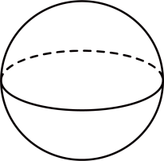
A． B．
B．
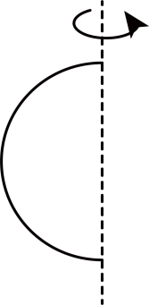
C．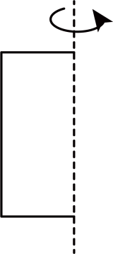
D．
2．画卷即为卷轴形的画，如图是一幅画卷展开的过程，这个过程体现的数学原理是 ．
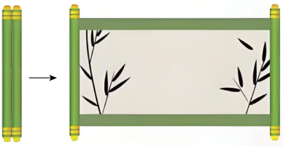
3．如图，将平面图形甲、乙分别绕轴
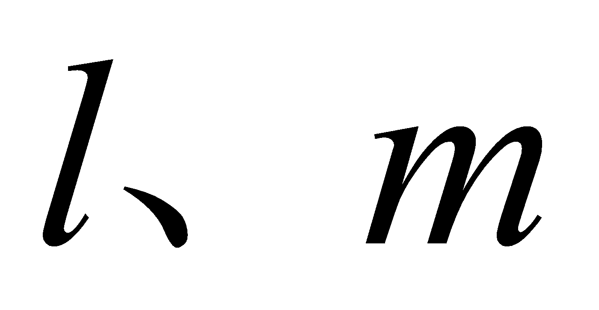
旋转一周，可以得到立体图形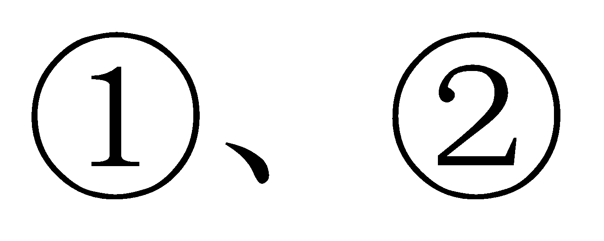
，图形甲是直角边分别为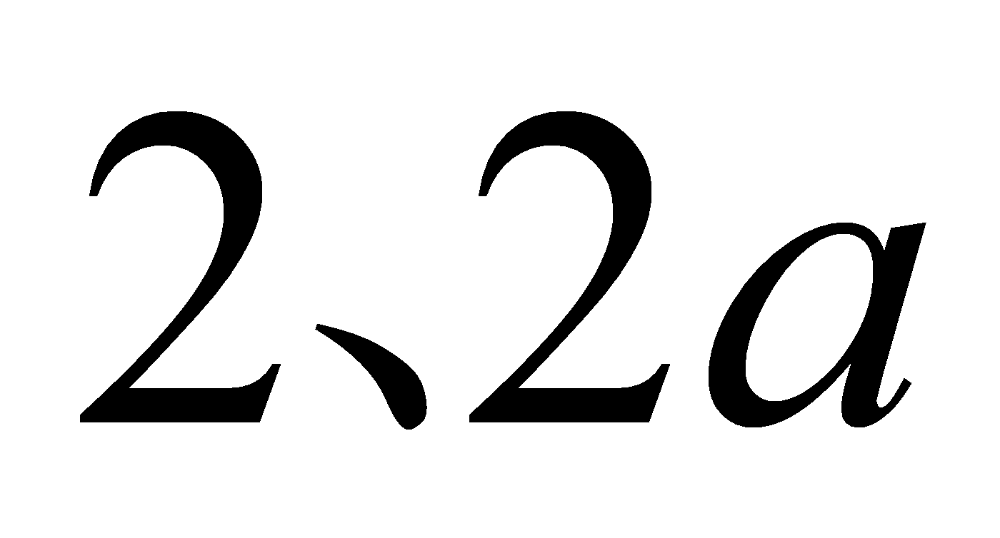
的直角三角形，图形乙是长为 、宽为
、宽为 的长方形．
的长方形．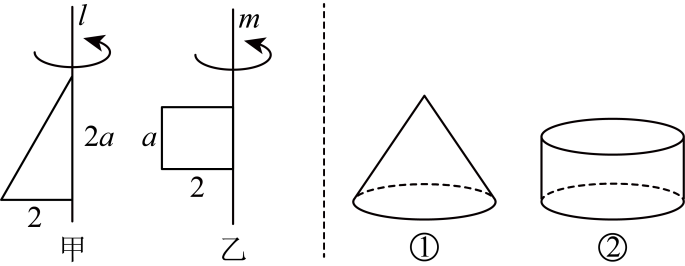
(1)立体图形 的名称是______；（答案直接填写在答题卡的横线上）
的名称是______；（答案直接填写在答题卡的横线上）
(2)请问立体图形比立体图形 的体积大多少？（用含和
的体积大多少？（用含和 的式子表示，
的式子表示， ，
， ）
）

题型01 常见的几何体
【典例1】端午节吃粽子是我国传统节日里的一大亮点．2025年端午节前夜，小红包了一个粽子后发现它每个面均是等边三角形，如图所示，这个粽子可以近似看作（ ）

A．长方体 B．四棱锥 C．三棱柱 D．三棱锥
【变式1】下列几何体中，是三棱柱的是（ ）
A． B．
B．
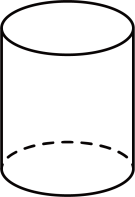
C． D．
D．
【变式2】下列几何体中，是圆柱的为（ ）
A．
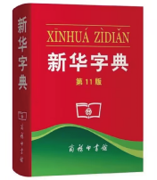
B． C．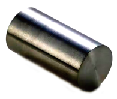
D．
【变式3】以下图片展示了生活中的常见物品，这些物品的形状最接近圆柱体的是（ ）
A． B．
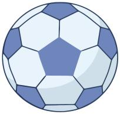
C．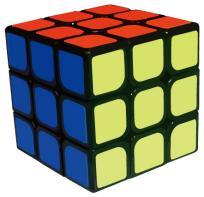
D．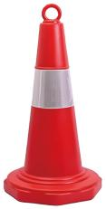
题型02 立体图形的分类
【典例1】将如图几何体分类，柱体有 ，锥体有 ，球体有 ．（填序号）

【变式1】将下图中的立体图形分类．

柱体 ；锥体 ；球体 ．
【变式2】如图是8个立体图形．其中，是柱体的有 ，是锥体的有 ，有曲面的有 ．（填序号）

【变式3】将下图的立体图形分类，柱体有 ，锥体有 ，球有 ．（填序号）
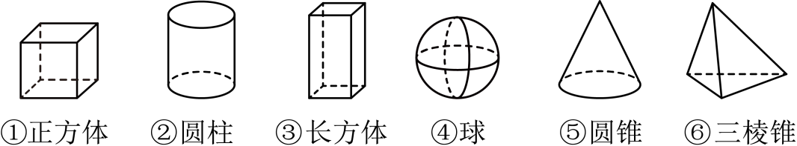
题型03 几何体中的点、棱、面
【典例1】银川承天寺塔（如图），始建于西夏天佑垂圣元年（公元1050年），是宁夏现存古塔中最高的一座砖塔．它是一座八角十一层楼阁式砖塔，它可以近似地看作由十一个八棱柱构成．请问：一个八棱柱一共有 角 条棱， 有 面， 有 个顶点．

【变式1】如图四个几何体分别是三棱柱，四棱柱，五棱柱和六棱柱，三棱柱有 个面，
个面， 条棱，
条棱， 个顶点，观察图形，填写下面的空．
个顶点，观察图形，填写下面的空．
（1）四棱柱有 个面， 条棱， 个顶点；
（2）六棱柱有 个面， 条棱， 个顶点；
（3）由此猜想 棱柱有 个面， 条棱， 个顶点．
棱柱有 个面， 条棱， 个顶点．
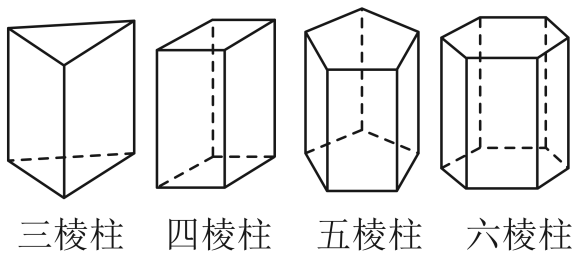
【变式2】已知一个直棱柱，它有21条棱，其中一条侧棱长为 ，底面各边长都为
，底面各边长都为 ．
．
(1)这个直棱柱是几棱柱？
(2)它有多少个面？多少个顶点？
(3)求这个棱柱的所有侧面的面积之和．
【变式3】欧拉为世界著名的数学家、自然科学家，他在数学、物理、建筑、航海等领域都做出了杰出的贡献，他对多面体做过研究，发现多面体的顶点数
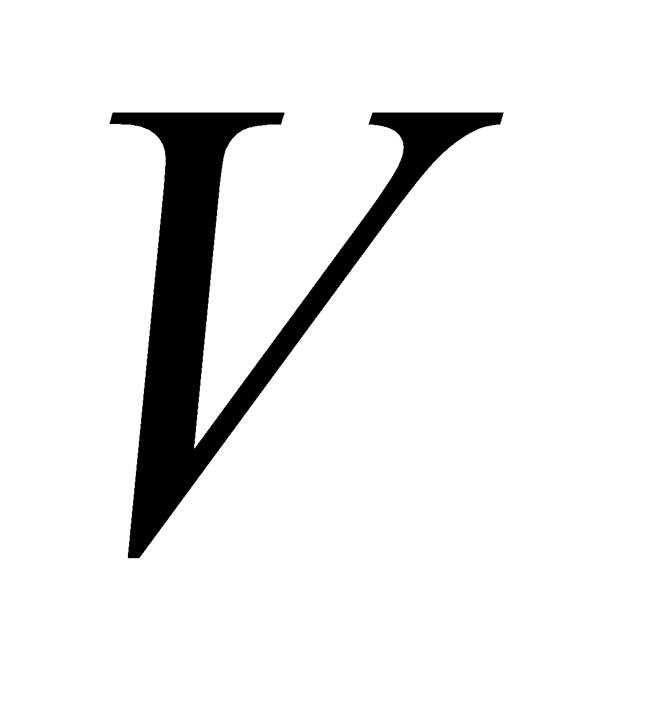
、棱数 、面数
、面数 之间存在一定的数量关系，给出了著名的欧拉公式．
之间存在一定的数量关系，给出了著名的欧拉公式．(1)观察下列多面体，并把下表补充完整：
名称 | 三棱锥 | 三棱柱 | 五棱柱 | 正八面体 |
图形 | 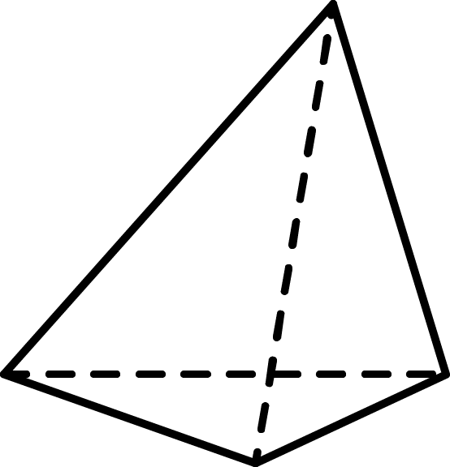 | 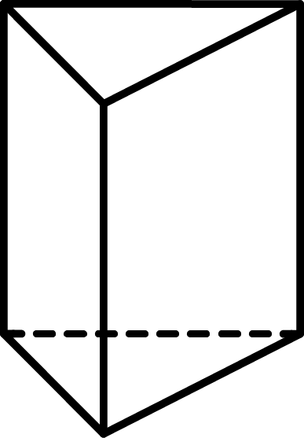 |
| 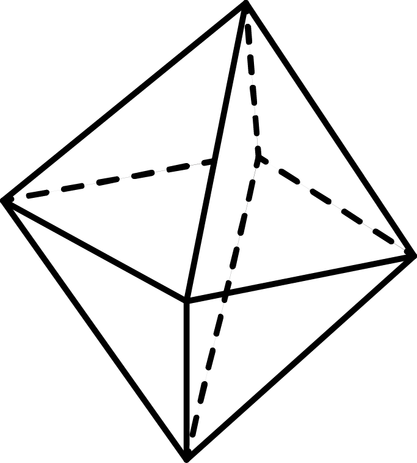 |
顶点数 | 4 | 6 | ||
棱数 | 6 | |||
面数 | 4 |

(2)分析表中的数据，请写出、、之间的等量关系：___________；
(3)某个饰品的外形是简单多面体，它的外表是由三角形和五边形两种多边形拼接而成的，且有36个顶点，每个顶点处都有3条棱，请问该多面体表面三角形与五边形的个数之和是多少？
题型04 动态认识点、线、面、体
【典例1】下面现象中，能说明“线动成面”的是（ ）
A．天空划过一道流星
B．时钟的钟摆摆动留下的痕迹
C．抛出一块小石子，石子在空中飞行的路线
D．一枚硬币在桌面上旋转的轨迹
【变式1】朱自清的《春》一文里，在描写春雨时有“像牛毛，像细丝，密密地斜织着”的语句，这里用数学的眼光来看其实是把雨滴看成了点，把雨看成线，说明（ ）
A．点动成线 B．线动成面 C．面动成体 D．以上三个均有
【变式2】在朱自清的《春》中描写春雨“像牛毛、像花针、像细丝，密密麻麻地斜织着”的语句，这里把雨看成了线，这种生活现象可以反映的数学原理是（ ）
A．线动成面 B．点动成线
C．面动成体 D．点动成线、线动成面、面动成体
【变式3】在中国传统文化中，折叠灯笼是一种既美观又富有创意的手工艺品．当它折叠起来时看起来是平面的，当被提起来后又变成了如图所示的圆柱形的灯笼，这种现象说明的数学道理是（ ）
A．点动成线 B．线动成面
C．面动成体 D．面与面相交的地方是线
题型05 平面图形旋转所得立体图形
【典例1】下面图形中，以直线为轴旋转，可以得到圆锥体的是（ ）
A． B．
B．
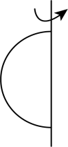
C．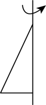
D．
【变式1】陶瓷器具是我国古代劳动人民的重要发明之一，是中国人民勤劳与智慧的结晶．如图所示，将给定的图形绕虚线旋转一周得到的几何体与下列陶瓷花瓶最为类似的是（ ）
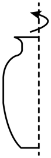
A．
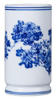
B． C．
C．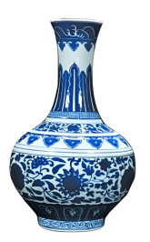
D．
【变式2】将如图所示的平面图形绕直线 旋转一周，得到的立体图形是（ ）
旋转一周，得到的立体图形是（ ）
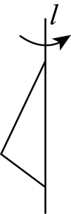
A．
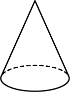
B．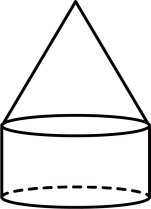
C．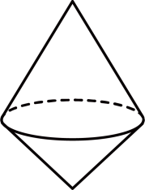
D．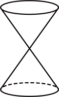
【变式3】如图，第一行的图形绕虚线转一周，能形成第二行的哪个几何体？ 用线连起来．

题型06 求平面图形旋转所得立体图形体积
【典例1】如图，将长方形绕其长边所在直线旋转一周，得到一个立体图形．
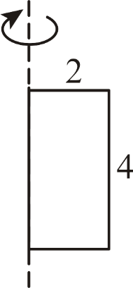
(1)这个立体图形是______．
(2)求这个立体图形的侧面积．（结果保留 ）
）
【变式1】如图，某酒店大堂的旋转门内部由四块宽2m、高3m的长方形玻璃隔板组成．
(1)每扇旋转门旋转一周，能形成的几何体是 ，这体现了 动成体；
(2)求每扇旋转门旋转一周形成的几何体的体积（结果保留π）．

【变式2】小军和小红分别以直角梯形的上底和下底为轴，将梯形旋转一周，得到的两个立体图形．我们旋转的平面图形是完全一样的，所以旋转后得到的两个立体图形的体积相等．

(1)小红得到的立体图形可以看成是由_______和_______构成的，这个现象用数学知识解释为_______
(2)你认为谁的说法正确？请通过计算说明理由．
【变式3】当同一个平面图形绕不同的轴旋转时，得到的立体图形一般不同．

(1)如图1是一张长方形纸片， 长为
长为 ，
， 长为
长为 ．若将这个长方形纸片绕它的对边中点所在直线旋转一周，求形成的几何体的表面积．（结果保留π）
．若将这个长方形纸片绕它的对边中点所在直线旋转一周，求形成的几何体的表面积．（结果保留π）
(2)已知一个直角三角形，它的各边长如图2所示．当三角形绕着图中所示的虚线旋转一周时，得到的是一个几何体，你能求出这个几何体的体积吗？（结果保留π）

1．如图，生活中的实物可以抽象出各种各样的几何图形，如图所示的斗笠的形状类似于（ ）
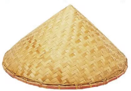
A．球 B．圆柱 C．棱锥 D．圆锥
2．如图为小文同学的几何体素描作品，下列选项中该作品中不存在的几何体为（ ）

A．棱柱 B．正方体 C．圆柱 D．球
3．下列四个立体图形中，是棱柱的是（ ）
A． B．C． D．
B．C． D．
4．用一根小棒粘住直角三角形的一条直角边，旋转一周，这个三角形转动后产生的图形是（ ）
A．三角形 B．圆形 C．圆锥 D．圆柱
5．如图，分别以直角梯形的下底和上底所在的直线为轴，将梯形旋转一周得到A，B两个几何体，则 ，
， 两个几何体的体积之比是（ ）
两个几何体的体积之比是（ ）
A．
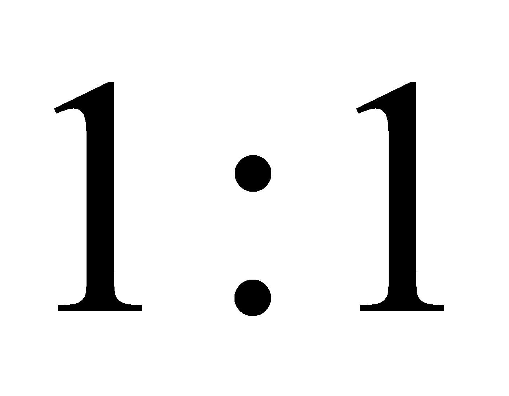
B． C．
C． D．
D．
6．积木是很多同学小时候玩过的一种玩具，对于锻炼手眼协调能力，培养科学思维很有帮助．如图所示是用积木拼成的小车，写出你能看出的立体图形： ．（写两种即可）
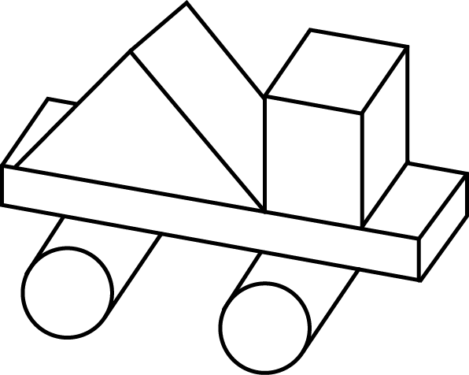
7．向空中扔一块小石子，小石子经过的路线用数学知识解释为点动成线．中国扇文化有着深厚的文化底蕴，中国历来有“制扇王国”之称．如图，打开折扇时．随着扇骨的移动形成一个扇面，这种现象用数学知识解释为 ．

8．将图中的几何体分类，柱体有 ，锥体有 （填序号）．
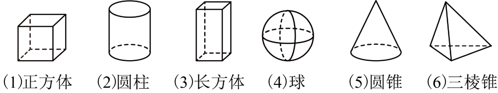
9．如图，该几何体是一个直棱柱，它的名称是 ，它有 个顶点， 条棱．
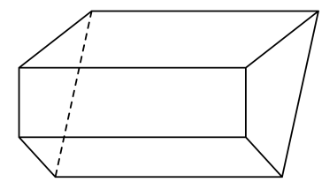
10．如图是一张长方形纸片，长方形的长为 ，宽为
，宽为 ，若将此长方形纸片绕它的宽所在直线旋转一周，得到一个几何体，这个几何体的侧面积为
，若将此长方形纸片绕它的宽所在直线旋转一周，得到一个几何体，这个几何体的侧面积为  （结果保留
（结果保留 ）．
）．
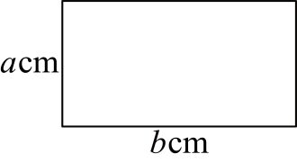
11．指出如图所示的立体图形中的柱体、锥体、球．

(1)如果按“柱、锥、球”来分，柱体有 ，锥体有 ，球有 ；
(2)如果按“有无曲面”来分，有曲面的有 ，无曲面的有 ．
12．如图，直角三角形纸片的两条直角边的长分别为a，b，将它分别绕直线（图1）和直线（图2）旋转一周．

(1)两次旋转所形成的几何体都是_____；
(2)若 ，
， ，则图2中，绕直线
，则图2中，绕直线 旋转一周后形成的几何体的底面积为多少？（结果保留）
旋转一周后形成的几何体的底面积为多少？（结果保留）
13．已知长方形的长为 ，宽为
，宽为 ，将这个长方形分别绕它的长和宽旋转一周，可以得到两个圆柱（如图）．
，将这个长方形分别绕它的长和宽旋转一周，可以得到两个圆柱（如图）．

(1)圆柱①的底面直径是_____，高是_____；圆柱②的底面直径是_____，高是_____；
(2)试比较这两个圆柱的侧面积．
14．小军和小红分别以直角梯形的上底和下底所在的直线为轴，将梯形旋转一周，得到了两个立体图形．
小军：我们旋转的平面图形是完全一样的，所以旋转后得到的两个立体图形的体积相等．
小红：我不同意你的看法，我认为甲、乙两个立体图形的体积不相等．
(1)你同意____________的说法．
(2)甲、乙两个立体图形的体积比是多少？
15．如图所示是一些常见的多面体．

(1)数一下每一个多面体具有的顶点数（V）、棱数（E）和面数（F），并且把结果记入表中：
多面体 | 顶点数（V） | 面数（F） | 棱数（E） |
正四面体 | 4 | 4 | 6 |
正方体 | 6 | ||
正八面体 | 6 | 12 | |
正十二面体 | 20 | 12 | |
正二十面体 | 12 | 20 | 30 |
(2)观察表中数据，猜想多面体的顶点数（V）和面数（F）的和与棱数（E）之间的关系；
(3)若已知一个多面体的顶点数 ，棱数
，棱数
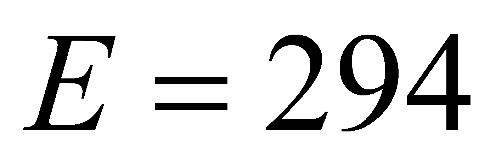
，请你用（2）中的结果求这个多面体的面数．